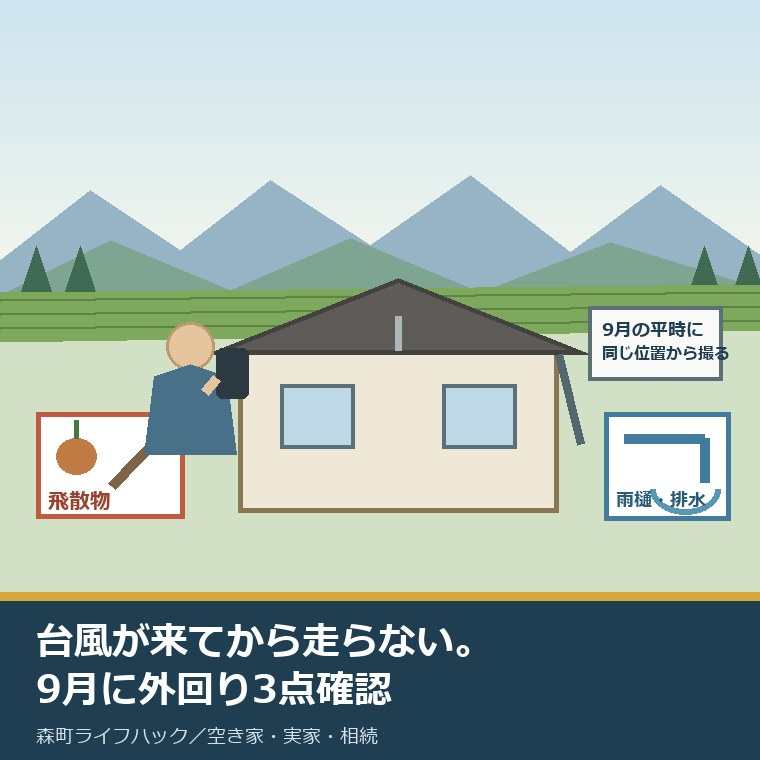
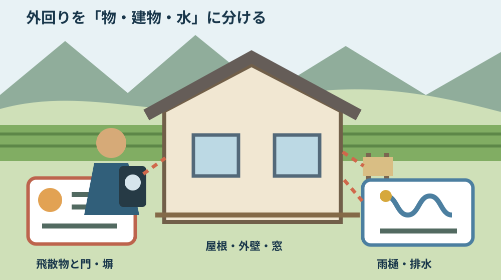
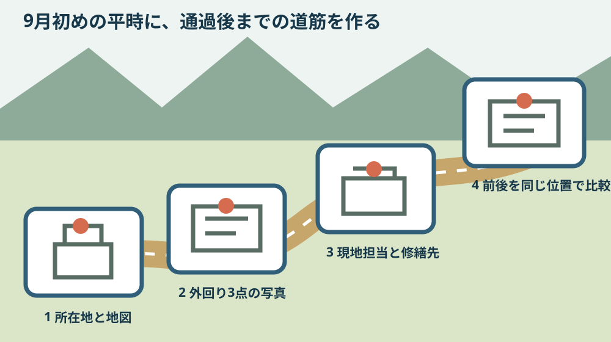

森町の空き家台風対策｜9月に外回り3点確認

この記事の要点
Q. 森町の実家が空き家です。9月の台風前に、何を確認すればいいですか。
A. 平時に外回りを3点確認します。①飛びやすい物と門・塀、②屋根・外壁・窓、③雨樋・排水です。同じ位置から写真を撮り、現地担当者と修繕先を1人ずつ決めます。台風接近後に遠方から急行せず、強風・大雨・夜間は確認を中止してください。
森町に空き家となった実家があり、持ち主は県外。台風の予報を見ても、すぐ現地へ行けるとは限りません。仕事を休めない。鍵を持つ親族も近くにいない。何から頼めばよいか分からない。この記事は、その迷いを9月の平時に片づけるためのものです。
先に言い切ります。台風対策は、台風が来てから空き家へ走ることではありません。来る前に見る場所を3つに絞り、誰が写真を撮るかを決めることです。
3つは、①飛びやすい物と門・塀、②屋根・外壁・窓、③雨樋・排水です。森町の公表案内と第2期森町空家等対策計画の調査項目を、遠方の持ち主が頼みやすい単位へまとめました。
確認日は2026年9月1日です。気象庁、森町の自然災害案内、森町防災ハザードマップ、第2期森町空家等対策計画を確認しました。個別の家の安全性や修繕方法は、公表資料だけでは判断できません。
9月の東海は、平年で年1.2個が接近する計算
気象庁が平年値に使う1991年から2020年までの東海地方接近数を集計すると、9月は30年間で36個、年平均1.2個です。これは当方が気象庁の東海地方接近数CSVを合計し、30年で割った値です。
気象庁の「台風の平年値」に載る9月の接近数3.3個は、日本全国への接近数です。東海地方の値ではありません。1.2個と3.3個を混ぜないことが、最初の注意点です。
東海地方への接近は、台風の中心が静岡県、愛知県、岐阜県、三重県のいずれかの気象官署などから300キロメートル以内に入った場合として集計されています。森町の一軒ごとの被害回数を示す数字ではありません。
月別の接近数は、接近が2か月にまたがる場合があります。そのため月別の合計と年間の接近数は一致しないことがあると気象庁は説明しています。1.2個は「必ず1回以上来る」という予報でもありません。
それでも9月初めを点検日にする根拠にはなります。予報が出てから業者を探すより、平時に一度写真をそろえる。接近が0個の年でも、写真は次の大雨や冬の風の比較に使えます。
森町公式が挙げる台風前後の確認
森町の「自然災害（台風・集中豪雨・地震）」は、台風前に家の周囲を見回るよう案内しています。風で飛ばされやすい小物は屋内へ入れ、アンテナ、看板、板塀を確認し、雨樋を掃除する内容です。
同じページは、台風が去った後にも家屋の周囲を点検するよう案内しています。前だけで終わらず、後にも同じ場所を見る。空き家ではこの前後比較が特に効きます。
第2期森町空家等対策計画によると、町が2022年度に把握した空き家候補建物は592戸です。内訳は管理良好213戸、要適正管理286戸、管理不全93戸でした。確定した空き家戸数ではなく、調査上の候補建物です。
同計画の現地調査には、門・塀、雑草・立木、屋根材、外壁材、雨樋、窓ガラスなどが別項目で並びます。町の人は、すでに592戸の候補を一軒ずつ見る負担を払っています。遠方の持ち主が自分の一軒の写真を整えることは、その負担を町任せにしない小さな役割分担です。
計画期間は2023年度から2032年度までの10年間です。実家がこの調査のどこに当たるかを先に整理したい方は、町は10年計画で空き家を見ている——第2期空家等対策計画から実家の位置を確かめるも参照してください。

外回り1：飛びやすい物と門・塀
一つ目は、風で動く物です。植木鉢、物干しざお、じょうろ、板、波板、脚立、空の容器、物置の外に立て掛けた道具を見ます。重さではなく、風を受ける面と固定の状態で考えます。
収納できる物は屋内か物置へ入れます。戻す場所が分からなくならないよう、移動前後を撮ります。分電盤、止水栓、避難経路の前へ詰め込まないことも記録します。
門扉、板塀、看板は小物とは別です。ぐらつき、傾き、外れた部材を地上から見ます。傷んだひもやブロックを足しただけで固定できたとは判断しません。
立木は枯れ枝、傾き、電線や道路への接近を見ます。台風直前に高い枝を切る段取りは危険です。草と枝の管理を平時に頼む場合は、八月の草は、刈っても月内にもう一度伸びる——実家の畑と空き地を誰にいくらで頼むかで、依頼範囲と金額の残し方を整理しています。
対応できない物は消さず、「未対応」と書きます。場所、写真番号、周囲へ届く可能性、連絡した業者を1行にします。未対応を見える状態にするほうが、無理な応急作業より安全です。
外回り2：屋根・外壁・窓
二つ目は建物の外装です。屋根材、棟、軒先、アンテナ、雨戸、窓ガラス、外壁を地上の安全な位置から見ます。東西南北か、道路側・裏側など、家族で同じ呼び名を使います。
屋根には上りません。はしごも掛けません。浮きやずれが疑われたら写真に丸を付け、屋根を扱う業者へ見てもらいます。接近直前に持ち主が直す対象ではありません。
窓は施錠、雨戸の閉まり、割れ、戸袋の外れを見ます。動かない雨戸を力任せに閉めると、かえって部材を壊します。動かない状態を撮り、修繕先へ伝えます。
外壁は以前からのひびや剥がれと、今回見つけた変化を分けます。基準になる写真に撮影日がなければ、今回の写真を最初の基準にします。古い写真との色の違いだけで被害とは決めません。
同じ位置から4面を撮ると、台風後の比較ができます。画角が違うと、軒の影や樹木の重なりを破損と見間違えます。立つ位置を簡単な見取り図に点で残してください。
外回り3：雨樋・排水
三つ目は水の通り道です。軒樋、縦樋、縦樋の出口、敷地内の排水口、道路側の側溝を分けます。森町の案内が挙げる雨樋の掃除は、風雨が強まる前の平時に行う作業です。
雨樋は落葉、泥、外れ、たわみを地上から見ます。高所の清掃は業者へ頼みます。詰まりが見えても、雨の中ではしごを掛ける判断はしません。
排水口は、ふた、落葉、ごみ、土砂、流れる先を確認します。清掃した泥や葉を水路へ押し流さず、回収します。公共部分や隣地の水路を勝手に変えません。
通過後は、泥の線、落葉が集まった場所、基礎周りの洗掘、縦樋の外れを撮ります。水が引いたから床下まで無事だとは断定できません。浸水が疑われる場合は、通電や設備操作を急がないでください。
空き家の床の高さと太田川の想定を一緒に見たい方は、森町のハザードマップ｜太田川の想定最大規模で実家の床の高さを見るへ進めます。地区別PDFで所在地を確かめてから、現地写真と重ねます。
森町での暮らしへの影響は、地区と道で変わる
森町防災ハザードマップは、三倉、天方、森、一宮、園田、飯田の地区別に公開されています。土砂災害の想定、河川氾濫、避難所を一枚の町全体図だけで見ないための分け方です。
同じ森町でも、川沿い、斜面の近く、山へ入る道、平地の住宅地では、現地へ着くまでに見る情報が違います。町全体の警報だけで、一軒の進入路が通れるとは判断できません。
遠方所有者の負担は、往復時間だけではありません。鍵を受け渡す人、草を刈る人、屋根を見る業者、台風後に道路側から確認する人が別々なら、連絡先の維持が必要です。空き家の維持費には、人をつなぐ手間も含まれます。
近隣の方へ頼む場合も、善意を当然と扱わないでください。見る場所、敷地へ入る範囲、鍵を使うか、写真枚数、謝礼、危険時は中止する条件を先に伝えます。
台風後に「ちょっと見てきて」と頼む言葉は短いのですが、受ける側は倒木、電線、冠水を判断します。町の人がすでに払う時間と危険を認め、平時の依頼へ変える必要があります。
良い点：町の資料は、外回りの名詞まで示している
良い点は、森町の自然災害案内が飛散物、アンテナ、看板、板塀、雨樋という具体名詞を出していることです。「備えましょう」だけでは、遠方の家族へ頼めません。名詞があれば写真の依頼文を作れます。
第2期森町空家等対策計画も、門・塀、雑草・立木、屋根材、外壁材、雨樋、窓ガラスを分けています。町の調査と持ち主の点検で同じ部位名を使えば、相談時の説明が短くなります。
ハザードマップが6地区に分かれている点も実用的です。遠方の家族でも、実家の住所を地区図へ当てて、浸水と土砂の両方を現地へ行く前に確認できます。
町の案内は通過後の点検まで書いています。前の写真だけでは、もともとの傷みと今回の変化を分けにくい。前後を一組にする考え方へつなげられます。
注文したい点：遠方所有者の「誰に頼むか」は残る
その上で注文したい点があります。町の資料を読んでも、遠方所有者が平時の点検を誰に頼めるか、費用はいくらか、写真は何枚か、という実務は分かりません。
空き家候補建物592戸のうち、要適正管理と管理不全は合わせて379戸です。数字は建物の状態を示しますが、持ち主が遠方か、鍵を誰が持つか、すぐ頼める業者がいるかまでは示しません。
私は、町の計画だけで空き家管理が回るとは考えていません。町の調査には意味があります。ただ、最後に雨樋の写真を撮るのは人です。打開が要るのは、制度名ではなく現地の担い手と連絡先です。
ここは私にも迷いがあります。近隣の方へ頼めば早い一方で、毎回の負担を寄せてしまいます。業者へ頼めば費用がかかります。家族が行けば移動時間と交通費がかかる。どれにも負担がない答えはありません。
だから、一度の善意で乗り切るより、年に何回・いくらまで・どこを見るかを決めるほうが続きます。後継の決まらない実家でも、管理の担い手だけは暫定で置けます。

対案・結論：今日、連絡先を1人決める
今日できる小さな一歩は、現地を見られる人を1人だけ決めることです。親族、近隣の方、管理業者のどれでもかまいません。まだ頼めないなら、候補の名前と電話番号を家族のメモへ書くだけでも始まります。
依頼文は「台風前に見てください」では足りません。「9月10日までの晴れた日に、外から3か所を撮ってください。危険なら中止してください」と日付と中止条件を入れます。
写真は、①飛散物と門・塀、②屋根・外壁・窓、③雨樋・排水の3フォルダーへ分けます。各フォルダーに全景1枚と気になる部分1枚があれば、最初の基準として使えます。
費用が発生する相手には、上限を先に決めます。「写真確認まで」「軽い片づけまで」「修繕は見積り後」と作業の境界を分けます。修繕を急ぐ必要がある場合の連絡方法も書きます。
台風が接近したら、現地へ行くかではなく、中止する条件を確認します。強風、大雨、夜間、冠水、増水、斜面の異常があれば見回りません。未確認を残して、安全が戻った後へ送ります。
通過後は同じ位置から撮り、前後を横に並べます。変化がない部位も「変化なし」と残します。写真だけで安全を保証せず、屋根、高所、電気、構造は専門家へつなぎます。
家族に残す記録
記録は一枚で十分です。空き家の住所、地番、鍵の所在、現地担当者、第二連絡先、修繕先、火災保険の連絡先、写真の保存先、最後に見た日を書きます。
住所と地番は別の欄にします。宅配や地図で使う住居表示と、登記の土地番号は同じとは限りません。ハザードマップは住所、登記や見積りは地番が必要になる場面があります。
門、塀、立木が道路や隣地へ向く場所も書きます。誰の土地側にあるかが分からなければ「未確認」と残します。境界を写真だけで決めないでください。
修繕履歴は、点検写真と分けます。施工日、施工範囲、業者名、見積書、領収書、保証、次回点検日を一件番号で結びます。前回直した場所が分かれば、台風後の問い合わせが短くなります。
保険は契約の有無だけでなく、証券番号、連絡先、事故時の写真条件を確認します。補償されるかは契約ごとに違うため、この記事から断定しません。
大石の視点
ここからは、大石浩之（磐田市／不動産業）としての意見です。体験ストックに使える実話がないため、現場で見た出来事としては書きません。
今すぐ売るかは決めなくていい。ただ、9月の外回り確認まで先送りする理由にはなりません。売る、貸す、残すの結論と、飛びそうな板を片づける判断は別です。
私は「まだ決めない自由」を残したいと考えています。査定額を先に出すより、住所、名義、道路、境界、維持費をそろえる。台風前の写真も、その判断材料の一つです。
一方で、管理を保留する自由はありません。空き家の屋根材や板塀が道路や隣地へ動けば、持ち主だけの問題ではなくなります。町の人へ負担を移さない最低線は、連絡がつく状態を保つことです。
空き家の担い手、移動、維持費、後継は一度には決まりません。だからこそ今日の作業を小さくします。連絡先を1人、写真を3組、上限額を1つ。これなら売却を決めなくても進められます。
まとめ
気象庁の1991年から2020年までの東海地方接近数を集計すると、9月は年平均1.2個です。全国の9月平年値3.3個とは別の数字であり、森町一軒の被害確率でもありません。
森町の公表案内に沿う外回り3点は、飛散物と門・塀、屋根・外壁・窓、雨樋・排水です。屋根へ上らず、平時に同じ位置から撮ります。
今日の一歩は、現地確認者を1人決めることです。9月の晴れた日に写真を頼み、危険時は中止する条件、修繕先、費用上限を一枚へ残してください。
よくある質問
Q1. 遠方に住んでいて、台風前に森町の空き家へ行けない場合はどうしますか。
A1. 台風が近づいてから無理に移動せず、9月初めの平時に近隣の連絡先か管理業者を1人決めます。飛散物、屋根・外壁・窓、雨樋・排水の3点を同じ位置から撮影してもらい、写真の保存先と費用の上限を家族で共有します。依頼できる人がいなければ、森町の空き家相談窓口へ管理方法を相談します。
Q2. 空き家の台風前点検で、屋根に上る必要はありますか。
A2. 所有者自身が屋根へ上る必要はありません。屋根材、軒先、雨樋、アンテナは地上の安全な場所から目視し、写真を残します。浮きや外れが疑われても、接近直前に自分ではしごを掛けず、屋根や高所は専門業者へ依頼します。強風、大雨、夜間、冠水時は確認そのものを中止します。
Q3. 台風通過後は、いつ空き家を見に行けばよいですか。
A3. 警報解除だけで出発を決めません。道路、河川、斜面、倒木、電線の情報を確認し、安全が戻ってからです。到着しても塀の傾き、落下物、濁水、切れた電線が見えたら敷地へ入らず、道路側から記録します。接近前と同じ位置の写真を並べ、変化だけを修繕先へ伝えます。
制度、数値、公開ページは変わる場合があります。個別建物の安全、修繕方法、保険の対象は、建築・保険などの専門家へ確認してください。台風接近中は現地確認を行わず、気象情報と自治体の案内に従ってください。
参考にした公式情報
- 台風の平年値／気象庁（平年期間が1991年から2020年であること、全国への9月接近数が3.3個であることを2026年9月1日に確認）
- 東海地方への台風接近数／気象庁（接近の定義と対象地域を2026年9月1日に確認。リンク先CSVの1991年から2020年の9月欄36個を30年で割った1.2個は当方の計算）
- 自然災害（台風・集中豪雨・地震）／静岡県森町（飛散しやすい小物、アンテナ、看板、板塀、雨樋、通過後の家屋周囲点検の案内を2026年9月1日に確認。更新日2019年3月1日）
- 森町防災ハザードマップ／静岡県森町（地区別PDF、土砂災害、河川氾濫、避難所の掲載を2026年9月1日に確認。更新日2025年4月1日）
- 第2期森町空家等対策計画／静岡県森町（計画期間、2022年度の空き家候補建物592戸と状態別内訳、現地調査項目を2026年9月1日に確認。ページ更新日2023年11月30日）

磐田市で小さな不動産業を営みながら、森町の空き家・農地・実家じまいのご相談を受けています。地域と不動産実務をつなぐ目線で、確認の順番まで具体的に書きます。
最終確認日：2026-09-01 ／ 本記事は公表情報と執筆者の見解を分けて記載しています。東海地方の9月1.2個は気象庁CSVから当方が計算した値です。個別建物の安全性、修繕、保険の適用は専門家へご確認ください。